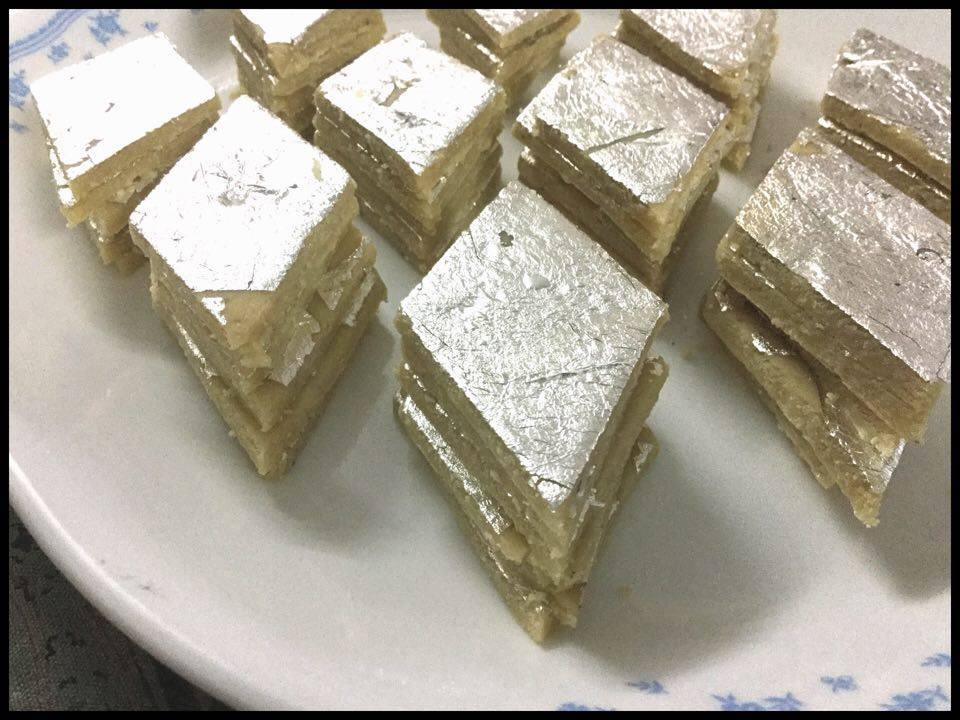
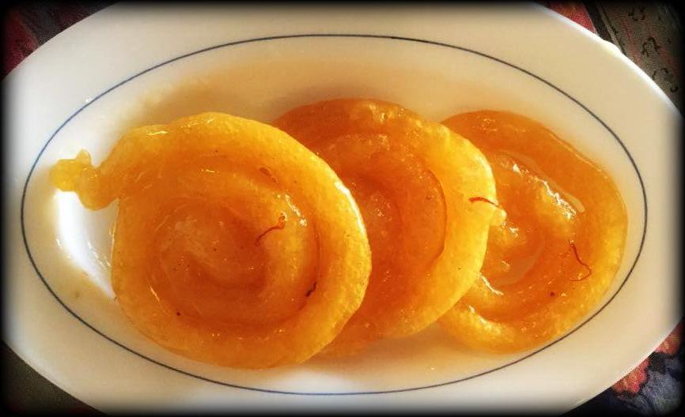
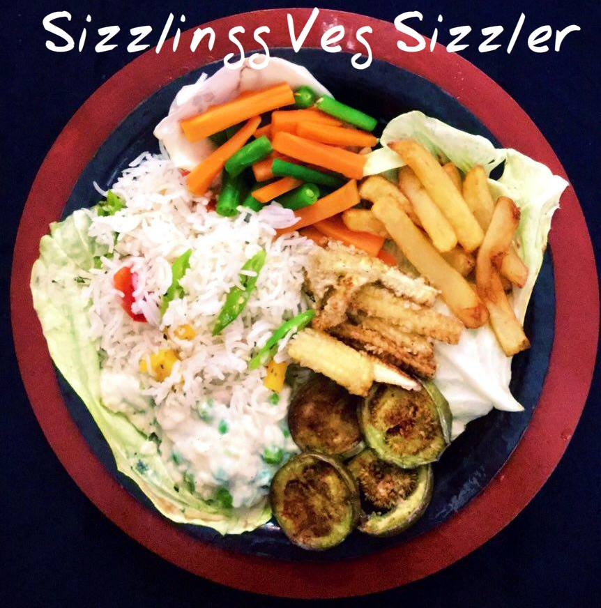
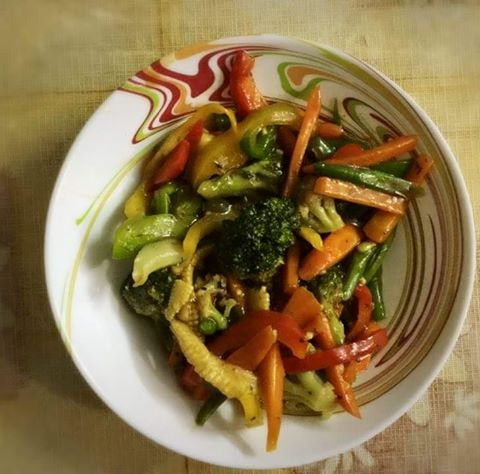

LittleFlavors

Bharwa Bengan Bhindi
Like most fruits and vegetables, brinjals too are great for your heart. Being rich in fiber, potassium, vitamin B-6 and phytonutrients like flavonoids, this vegetable lowers the risk of heart disease. The presence of antioxidants keeps your arteries healthy and prevents heart attack.

Peanut Barfi
This is another take on the Kaju Barfi I made last time. All I did was switch up the cashews with peanuts. You can use the same ingredients and method to make barfi out of other nuts such as pista and badam well.

Kaju Barfi
This is my lovely mom's recipe . This was the very first sweet I learnt to make from my mom and it never fails. My kids gobble it up as soon as they get their hands on it!:D

Homemade Jalebis!!!
Jalebi is a popular Indian dessert made with maida and sugar syrup. Served during festivals and special occasions, this dessert recipe is loved not just by kids but adults too. For a twist, this simple recipe can also be served as a breakfast with milk or curd. Try this delicious recipe.

Quick Quesadillas
This is an adapted version of Quesadillas from original Mexican cuisine. Filled with melted, gooey cheese, and packed with the crunch of bell peppers, these make a substantial meal. You can experiment with a variety of veggies such as corn, sweet potatoes, mushrooms, etc.

Mirchi Bhajji
Mirchi bada is a spicy Indian snack consisting of chili and potato stuffing, served hot with tomato sauce or occasionally with mint and tamarind chutney.

Dragon sizzler!
A delectable sizzler with creamy sauce, veggies and fries on the side. Light on spice and heavy on flavor! There are quite a few elements to this dish but at the end its all worth the effort. The fresh ingredients add that pop of color. It's that dish that will definitely make you go yummmm!! You'll ideally need a sizzler dish. If not, you can use a thick cast iron dish.

Mogra Sherbet
So my jasmine plants bloomed abundantly this summer, giving just the perfect quantity to prepare a fragrant, revitalizing juice made out of their flowers. It tastes as good as it smells! Sharing my recipe here:)

Stir fry
Stir frying is a Chinese cooking technique in which ingredients are fried in a small amount of very hot oil while being stirred in a wok.

Caramelised Pulao
This is my version of pulao filled with flavor, a variety in texture, and a hint of sweetness.